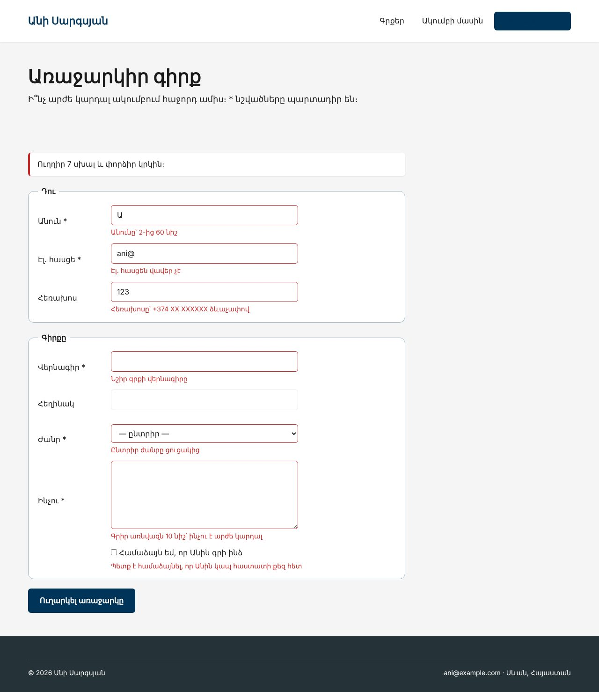
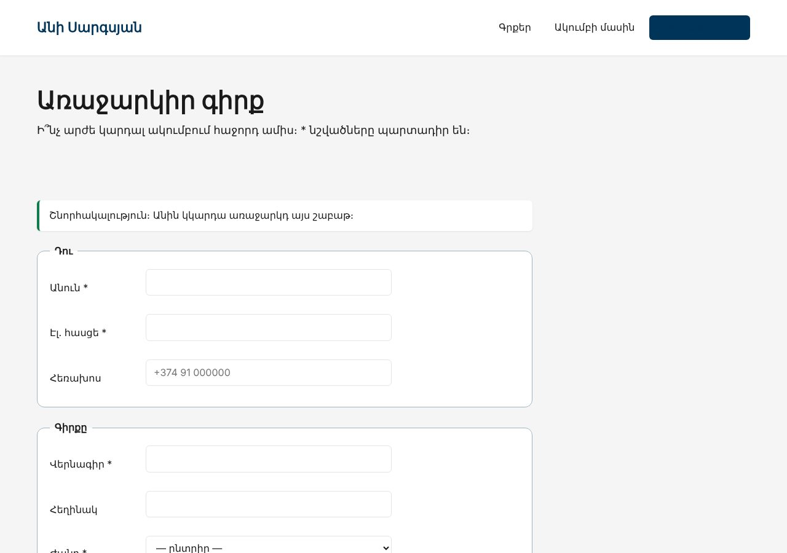

Տնային աշխատանք · PHP Դաս 06 · մինի-նախագիծ
Ակումբի անդամները առաջարկում են գրքեր։ Ֆորման ստուգում է սերվերը, ոչ բրաուզերը․ սխալները՝ դաշտերի տակ, լրացրածը մնում է, իսկ հաջողությունից հետո՝ PRG․ վերահղում և հաղորդագրություն, որ F5-ը նորից չուղարկի ֆորման։
Դաս 01–06․ $_POST, $_SERVER['REQUEST_METHOD'], վալիդացիա՝ trim, mb_strlen, filter_var, preg_match, in_array(..., true), header('Location') + exit, session_start՝ միայն flash-ի համար։ Զամբյուղ, cookie-ներ, ֆայլեր՝ Դաս 07։


Շարունակիր քո նախագիծը։ Եթե բաց ես թողել նախորդ դասը, սկսիր Դաս 05-ի օրինակից։
starter/css/php-06.css — հաղորդագրությունների և սխալների ոճերը| Գործարկել |
|---|
php -S localhost:8000 |
validateSuggestion(array $data): array՝ վերադարձնում է ['դաշտ' => 'սխալ']GENRES ցուցակից, in_array(..., true)-ով (տնային 7)// --- Հեռախոս՝ ոչ պարտադիր, բայց եթե կա՝ ճիշտ ձևաչափով (տնային, կետ 5) ---
$phone = trim($data['phone'] ?? '');
if ($phone !== '' && !preg_match('/^\+374\s?\d{2}\s?\d{6}$/', $phone)) {
$errors['phone'] = 'Հեռախոսը՝ +374 XX XXXXXX ձևաչափով';
}
// --- Գիրք ---
$title = trim($data['title'] ?? '');
if ($title === '') {
$errors['title'] = 'Նշիր գրքի վերնագիրը';
} elseif (mb_strlen($title) > 120) {
$errors['title'] = 'Վերնագիրը՝ առավելագույնը 120 նիշ';
}
$author = trim($data['author'] ?? '');
if (mb_strlen($author) > 80) {
$errors['author'] = 'Հեղինակը՝ առավելագույնը 80 նիշ'; // ⭐ վերին սահման ամեն դաշտում (կետ 9)
}
// --- Ժանր՝ ցուցակից, խիստ համեմատությամբ (կետ 7) ---
if (!in_array($data['genre'] ?? '', GENRES, true)) {
$errors['genre'] = 'Ընտրիր ժանրը ցուցակից';
}novalidate՝ ստուգում է սերվերը.field, սխալի դեպքում՝ .has-error, aria-invalid և aria-describedbyvalue="<?= e($old['name'] ?? '') ?>"$_SESSION['flash'], header('Location: suggest.php'), exitexit-ը և տես, ինչ է լինում (տնային 3)if ($_SERVER['REQUEST_METHOD'] === 'POST') {
$errors = validateSuggestion($_POST);
if ($errors === []) {
// Այստեղ կուղարկեինք նամակ Անիին կամ կպահեինք բազայում (Դաս 10–11)
$_SESSION['flash'] = 'sent';
header('Location: suggest.php', true, 303);
exit; // ⭐ առանց սրա կոդը կշարունակեր կատարվել
}
$old = $_POST;isset($data['agree'])․ չնշված checkbox-ը չի ուղարկվում ընդհանրապես (տնային 6)in_array(..., true)Tab-ով անցնելիս սխալը կարդացվում է էկրանընթերցիչով| Սխալ | Ինչպես ուղղել |
|---|---|
Cannot modify header information | <?php-ից առաջ բացատ կամ BOM կա, կամ արդեն echo ես արել (տնային 4) |
| F5-ից հետո «Resubmit form?» | Հաջողությունից հետո պետք է վերահղում, ոչ HTML |
"0" ընտրությունն անցնում է ժանրի ստուգումը | in_array-ի երրորդ արգումենտը՝ true |
filter_var-ը մերժում է 0-ն | === false, ոչ ! (տնային 8) |
Սրանք Դաս 06-ի տնային աշխատանքի կետերն են։ «մինի-նախագծում» նշվածները արդեն կատարել ես վերևի քայլերում՝ Անիի ակումբում։ Մնացածը կատարիր ՏեխնոՄարկետում, ինչպես գրված է դասում։
curl-ի հրամանը և պատասխանը՝ սքրինշոթով։exit-ը բացակայում է header()-ից հետո։ մինի-նախագծում<?php-ից առաջ և բացատրիր սխալը։preg_match-ով վալիդացիայով։ մինի-նախագծումin_array-ի երրորդ արգումենտը կարևոր է։ Բեր օրինակ, որտեղ առանց դրա ստուգումն անցնում է սխալմամբ։ մինի-նախագծումfilter_var-ի 0-ի թակարդը՝ !-ով և === false-ով։ մինի-նախագծումԵրբ բաժին 03-ի բոլոր կետերը նշված են, բացիր օրինակը։ Գտիր մեկ բան, որ դու արել ես այլ կերպ, և մտածիր՝ որն է ավելի հասկանալի և ինչու։ Քո լուծումը կարող է տարբերվել և լինել ճիշտ։